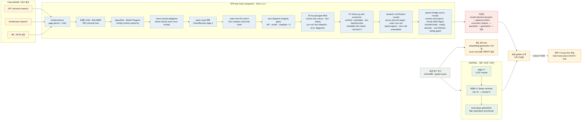
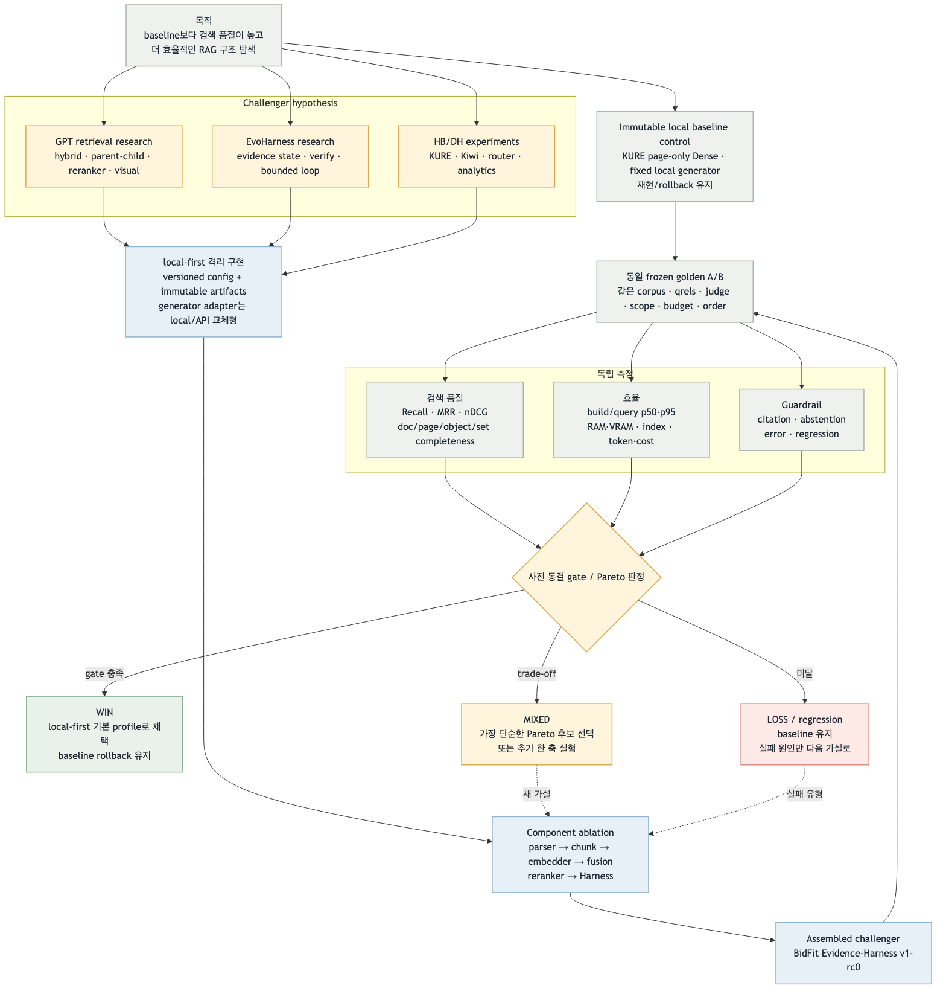

Local RAG Baseline → Evidence-Harness Challenger 평가 진행 보고서
2026-09-05 · 작업대 feat/total-integration · EH2.6.c3.1 · 최종 통합 대상 feat/local-qwen-mini131-eval
Mac-equivalent provisional. 재현·rollback 기준으로 유지.
Evidence-Harness는 EH2.6.c3.1까지. 실제 E2E는 미완성.
동일 골든셋 paired A/B와 gate/Pareto 판정 전.
지금 무엇을 쓰고 무엇을 만드는가
| 역할 | 대상 | 상태 | 의미 |
|---|---|---|---|
| 주 비교 통제군 B0 | KURE page-v1 + fixed local Qwen | 측정 완료·provisional | local-first retrieval 비교의 authoritative control |
| 별도 API arm | OpenAI small/nano + Streamlit | 호환 경로 | 과거 API-first 구현. local control을 대체하지 않음 |
| 현재 개발 대상 | feat/total-integration의 Evidence-Harness | EH2.6.c3.1 | E0 검색·follow-up 초기 투영·semantic 검증·parent/bridge source receipt 완료, rerank/effect/reducer/생성 E2E 미완성 |
| 최종 전달 대상 | feat/local-qwen-mini131-eval | 병합·선택 전 | local-first, generator는 local/API 교체형 |
| 채택 구조 | B0 대 assembled challenger | 미선정 | 같은 golden의 실측 결과로만 결정 |
한 문장: 현재 비교할 때 쓰는 것은 local baseline, 현재 만드는 것은 challenger, 나중에 기본으로 쓸 것은 아직 미정이다. EH2.6.c3.1 과정의 API·모델·Langfuse 호출은 0회이고 synthetic/offline fixture만 사용했다.
현재 relay 판정
| 후보 | 점수 | 상태 | 판정 |
|---|---|---|---|
| EH2.6.c3.1 | 10 | DONE | MATCHED — bounded parent/bridge source receipt와 root-lifetime replay guard 완료 |
| EH2.6.c3.2 | 10 | SELECTED | GAP — ID-less rerank와 derived semantic obligation |
| EH2.6.c3.3 | 8 | WAIT | GAP — bounded absence receipt |
| EH2.6.c4 | 7 | BLOCKED | GAP — d2 controller decision permit 선행 필요 |
| EH2.EVAL.4 | 5 | WAIT | GAP — 사람 승인·private qrels 선행 |
이전 → 현재 → 목표
| 구분 | 이전 | 현재 | 목표 |
|---|---|---|---|
| baseline 의미 | 먼저 만든 실행 경로 | immutable control로 고정 | 공정 비교·rollback 기준 |
| 연구 문서 | 좋은 구성의 참고안 | challenger hypothesis로 고정 | 실측에서 이긴 구성만 채택 |
| 구현 | page-only와 분리된 실험 섬 | Evidence/KURE child/Kiwi/RRF/QueryPlan/runtime authority | bounded controller·전문 lane·generation E2E |
| 평가 | 부분 지표 혼재 | 구현 PASS와 성능 우승 분리 | 단일변수 ablation + assembled paired A/B |
| 전달 | API UI와 local 경로 혼재 | 통합 작업대와 local 전달 branch 분리 | local-first 기본, API는 별도 arm |
| 선택 | 추천 스택이 목표처럼 보임 | winner 미선정 | 품질·효율·guardrail gate/Pareto 판정 |


같은 계층으로 정렬한 스펙
| 계층 | Local B0 control | Research/EvoHarness challenger | 평가 질문 |
|---|---|---|---|
| 데이터 | refined98 immutable | 같은 snapshot | corpus/hash가 같은가? |
| 파서·근거 | rhwp/pypdf page source | provenance parent + block/page/bbox | 정확도와 비용이 좋아지는가? |
| 청킹 | page-v1 · 9,331 | heading/paragraph child + object | 근거 recall/context 효율이 개선되는가? |
| 임베딩 | KURE page | KURE child; OpenAI small/Qwen3은 별도 arm | 동일 qrels의 Pareto 우위는? |
| Lexical/Fusion | 없음 / Dense exact | Kiwi BM25 + weighted/RRF A/B | lexical rescue·nDCG·지연 변화는? |
| Reranker | identity/no rerank | optional Qwen3 reranker | retention 이득이 p95 비용을 상쇄하는가? |
| Harness | single pass | QueryPlan·slot·coverage·bounded verify | 비교/목록/후속 completeness가 좋아지는가? |
| 전문 lane | 분리된 catalog/analytics/visual | list·analytics·table·figure bridge | top-N·전수·표·그림 실패가 줄어드는가? |
| 생성 | 고정 local Qwen | 같은 Evidence Pack + 교체형 adapter | retrieval과 generator 효과가 분리됐는가? |
| 관측 | 오프라인 지표 | E2E에서 Langfuse opt-in | latency/token/cost가 재현 가능한가? |
단일변수 실험군
| Arm | 기준선에서 바꾸는 것 | 검증할 가설 | 현재 |
|---|---|---|---|
| B0 | 없음: page/KURE Dense/local generator | 비교 출발점 | 측정됨 |
| R1 | child evidence + KURE Dense | 근거 recall/context 효율 개선 | paired run 전 |
| R2 | R1 + Kiwi + RRF k=60 | lexical rescue·다중문서 coverage 개선 | paired run 전 |
| R3 | R2 + Qwen3 reranker | 상위 evidence 순위/retention 개선 | adapter·실측 전 |
| H1 | 선택 R arm + bounded Harness | 비교·목록·후속·기권 완전성 개선 | controller 미완성 |
| V1 | 선택 text arm + table/figure bridge | object recall 개선 | 별도 gate |
B0 측정 출발점
Mac Ollama/NumPy exact의 mac_local_equivalent. official=false, passed=false, human gold 승인 전 provisional.
| 지표 | B0 | Challenger |
|---|---|---|
| Document Recall@1 / @5 / @10 | 0.921986 / 0.987589 / 0.991135 | 미측정 |
| MRR@10 | 1.000000 | 미측정 |
| Set precision / recall / F1 | 0.608974 / 0.692308 / 0.630769 | 미측정 |
| Set exact / count accuracy | 0.538462 / 0.538462 | 미측정 |
| Visual page / object Recall@10 | 0.600000 / 0.000000 | 미측정 |
| Semantic accepted / mean | 88/129 (0.682171) / 70.135659 | 미측정 |
| Runtime error | 6/129 (0.046512) | 미측정 |
| Total latency p50 / p95 | 33,405.49 / 263,840.61 ms | 미측정 |
이 값은 challenger가 넘어야 할 출발점이며 공식 GCP 성능이나 후보 우승 판정이 아니다.
평가와 선택 gate
| 축 | 지표 | 판단 |
|---|---|---|
| 검색 품질 | Recall@1/3/5/10, MRR, nDCG, required-doc | 정답 발견과 상위 순위를 분리 |
| 위치·객체 | page/object recall, table/figure locator | 문서만 맞는 허상 차단 |
| 집합 | set P/R/F1, exact/count, completeness | top-N·전수 누락 검출 |
| 효율 | build/query p50·p95, RAM/VRAM, index, token/cost, actions | 품질 동률이면 작은 구성 선택 |
| 안전성 | citation, abstention, error, regression | 품질과 환각·오류 trade-off 차단 |
threshold/non-inferiority는 결과를 보기 전에 hash로 봉인한다. hard gate를 통과하고 품질 개선+효율 guardrail, 또는 품질 non-inferior+핵심 효율 개선일 때만 채택한다. 서로 Pareto 우위가 없으면 no_winner로 baseline을 유지한다.
완료와 남은 gap
| 상태 | 항목 | 판정 | 다음 |
|---|---|---|---|
| DONE | baseline·계보 보존 | local B0와 API arm 분리 | 비교 때 재현 |
| DONE | challenger 골격·권한 | Evidence/KURE/Kiwi/RRF/QueryPlan/runtime authority | 회귀 유지 |
| DONE | E0 retrieval + focused gate | exact-once aggregate와 lexical rescue·fact empty·pre-call/error 경계 | 회귀 유지 |
| DONE | follow-up E1 초기 투영 | verified→candidate, slot doc-match, metadata fail-closed, retrieval 0 | 회귀 유지 |
| DONE | semantic 검증 receipt | source-derived target, exact one-call, typed support/contradiction, zero-call unavailable | 회귀 유지 |
| DONE | parent/bridge source receipt | candidate-only bounded seed, parent context-only, table/figure actual link·empty attempt, root-source replay 방지 | EH2.6.c3.2 |
| NOT DONE | state/terminal | effect/absence/reducer/bounded controller 없음 | EH2.6.c3~e |
| NOT DONE | specialist E2E | analytics/list/table/figure controller 밖 | EH3 |
| NOT DONE | generation/evaluator | adapter/CLI/layer evaluator 미완성 | EH4 |
| NOT DONE | same-golden selection | freeze receipt·paired A/B·winner 없음 | EXP-SELECT.2~5 |
다음 실행 순서
- EH2.6.c3.2 ID-less rerank/derived semantic부터 absence → decision-bound effect → bounded E1 controller를 완성한다.
- EH3의 catalog/analytics/list/table/figure를 같은 Evidence contract에 연결한다.
- EH4의 reranker, local/API generator adapter, CLI와 계층별 evaluator를 완성한다.
- 공통 hash·budget·metric threshold를 동결하고 B0→R1→R2→R3→H1→V1 paired ablation을 실행한다.
- assembled challenger를 full golden에서 비교하고 selection receipt와 사람 리뷰 뒤에만 local 기본 profile을 전환한다.
엔지니어링 검증
EH2.6.c3.1 focused 8/8 · semantic/retrieval/action/state 관련 회귀 114/114 · 전체 회귀 1,220/1,220 · repository safety 850 files PASS. 이는 구현 무결성 결과이며 retrieval 성능 향상 수치가 아니다.
API·모델·Langfuse 호출 0회, synthetic/offline fixture만 사용. current Mermaid PNG 직접 검사와 설치된 Chrome+bundled Playwright desktop/mobile QA(images 2, tables 8, page errors 0, mobile overflow 0) PASS.